ひとの作業を自動化できる手段がプログラミング。ゲームの敵キャラは、遊ぶ人が予想しない動きで勝手に動くよね。今日は、くものアスレチックに登場するゴースト（スプライト）の動きを自動化するよ。
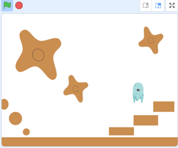
なんとニンジャ15名（会場6家族,パパ1名,オンライン4名,午後会場4家族）と高校/大学/社会人メンター6名で、総勢21名が参加してくれました。そのうち青梅に初参加は6名です。今回から午後のIT未来塾ラズパイ＆HSPも同日開催しました。
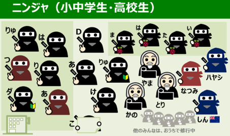
共通のテーマ「Scratch:自動でゴーストが移動」を作ります。サンプルの熊もScratchプログラミングで勝手に移動しています。左右移動、ジャンプ、１秒停止などの動きを、サイコロみたいにランダムな選択をする方法とそのときの動作をつくりました。今回参加できなかったニンジャも、敵が登場するゲームの基本なのでスプライトの自動移動をチャレンジしてみてください。
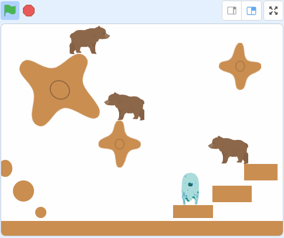
Scratchのコード（プログラム）はとってもシンプル。↓こんなに簡単です。
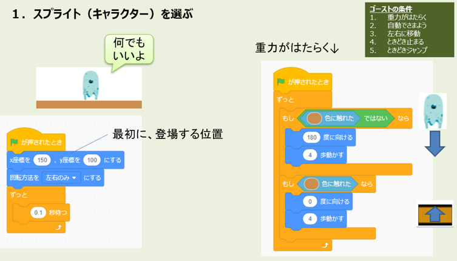
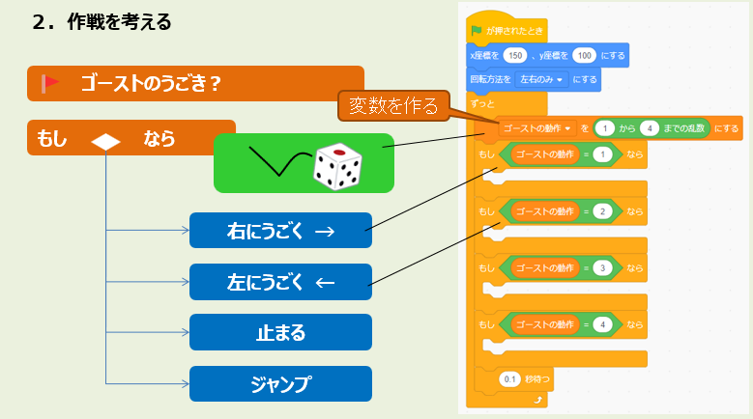
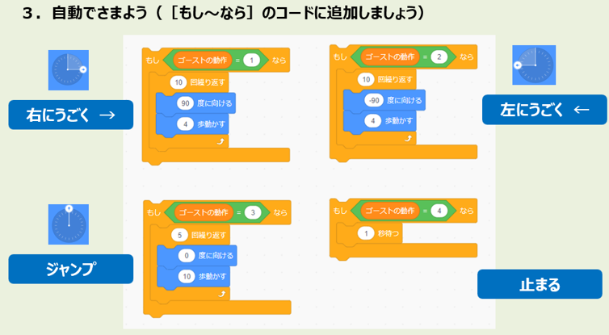
オンラインと会場でワークショップをしている風景です。会場は喚起のためちょっと寒いけれど、オンラインから半袖のメンターが夏のサンタクロースの話などニュージーランドのお話をしてくれました。
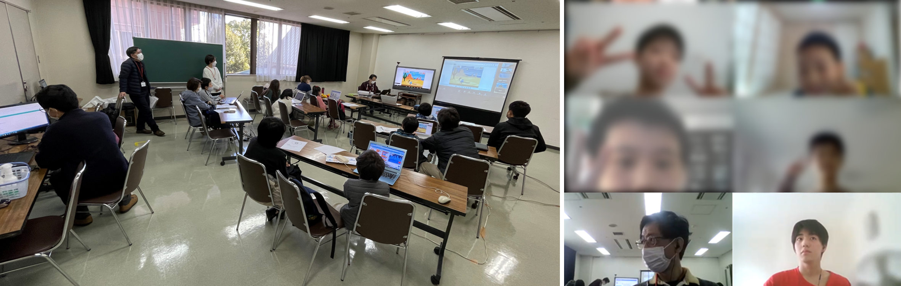
本日もみんな個性的なすばらしい作品をたくさん発表してくれました。TNTシリーズは音楽とのタイミングや現場中継の雰囲気が進化。本日テーマであるゴーストはランダムで様々なセリフを喋ったり、動く恐竜を避けてリンゴを取りに行ったり、様々な改造をしてくれました。
そういえば、右下のゲームはストーリーがしっかり考えられていて、遊んだ後もいいなと思いました。今度から自分もストーリー考えようと思います。
参考引用「昔、あるところに腹をすかした猫がいました。その猫は、死にそうでしたが、カニを5ひき～10ぴき見つけました。猫は、そのカニを全部食べました。死んだカニは、幽霊となって一斉に猫をさがしました。それに驚いたネコは、幽霊を除去する水鉄砲があるのを思い出しました。果たして猫は水鉄砲を取って、幽霊のカニを倒せるのだろうか。」
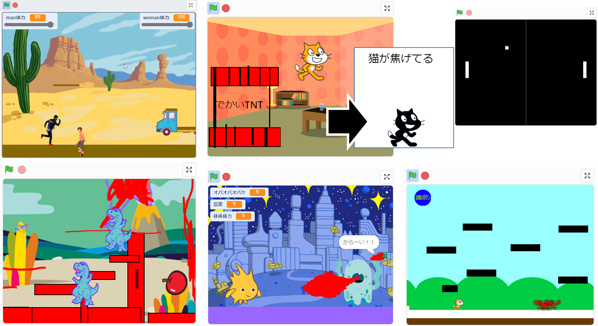
CoderDojo青梅では保護者の同席を推奨しているのですが、ニンジャの隣でお父さんがScratchゲームを作っていたのでみんなに紹介して頂きました。よくある格闘ゲームの必殺技まで登場、敵の動きが15種類もあるし、敵との距離に応じた自然な動作もするので実際のScratchコードは必見です。
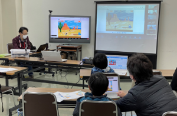
2021年最後のCoderDojo青梅でした。オンライン参加者も会場参加者もみんな、また来年お会いしましょう！
次回も楽しいイベントになるように冬休みもプログラミング研究しておきますね～。
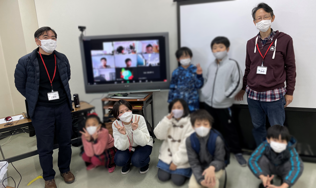
子どもたちのScratch作品は↓ここで
CoderDojo青梅 Scratchスタジオ
青梅IT未来塾の修了生4名が参加した初めての開催です。小型PCのラズパイ（Raspberry Pi）を持参して今後、電子工作や高度なHSPプログラミングにチャレンジしようというイベントです。午後はメンターが少なかったのと、貸出用ディスプレイを設置するなど慌ただしかったため、会場風景の撮影を忘れてしまいました。当日使ったオリエン資料とテキストでの報告とします。
なにしろ初回だったので最初のオリエンにて、参加してくれるニンジャ（小学5年～中学生）の興味やHSPプログラミングの経験を教えてもらいました。ゲーム作りにはあまり興味は無さそうで、どちらかというと電子工作的なものが望まれていると感じたので次回は電気回路を考えようかなと思います。
まずは腕試しにプログラムの基本となる繰り返し作業のコードを書いてみよう、という目的でHSP3プログラミング、フルスクラッチで描く「赤い頭のいもむし」をラズパイに接続したディスプレイに表示させてみます。しかし、いきなり最初の１行から問題が発生。講師はWindowsパソコンのHSP3プログラミングしか経験なく、ラズパイのHSP3言語パラメータが違うというハプニング😮焦ったー。参加したニンジャがみんなで問題解決に取り組み、無事に画面表示ができた（Nice! Team play）。
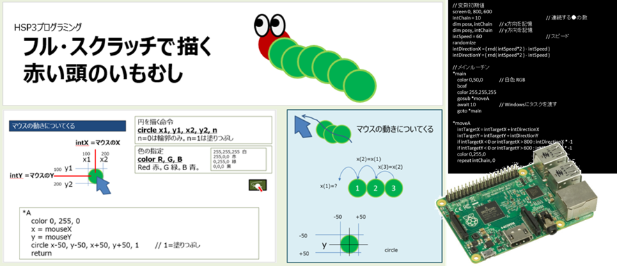
実はここで作った「いもむし」を使って次回以降はゲームを開発していこうと思ったのですが、先に電子工作に取り組もうと思います。プログラミングに自信のあるニンジャにはぜひ挑戦して欲しい改造のアイディア↓。次回に向けてメンターのヤマさんと一緒に電子部品を物色中です。おたのしみに。
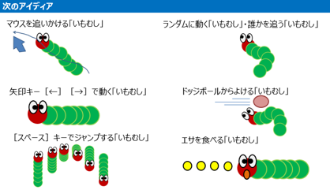
またねー。🙋♂️